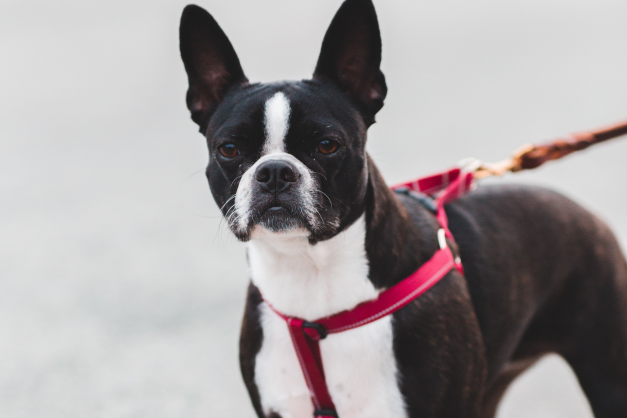

Basset Hound
Among the most appealing of the AKC breeds, the endearing and instantly recognizable Basset Hound is a perennial favorite of dog lovers all over the world. This low-slung and low-key hound can be sometimes stubborn, but is... Read more


Boston Terrier
The Boston Terrier is a lively little companion recognized by his tight tuxedo jacket, sporty but compact body, and the friendly glow in his big, round eyes. His impeccable manners have earned him the nickname 'The American Gentleman... Read more